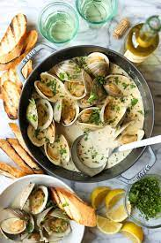

Butter Garlic Clams

Yes, thats right, butter garlic clams.
Found in nearly every seafood boil but something about feeling like im eating a piece of a mountain bike tire doesnt
sit right with me which makes it a strong contender for this list.
Ingredients
- 5 tablespoons Finlandia Unsalted Butter, divided
- 1 tablespoon fresh minced garlic
- 1 cup white wine
- 1 tablespoon lemon juice
- 3 dozen little neck clams, rinsed and scrubbed
- ⅓ cup chopped fresh Italian parsley
- Wedges from 1 lemon for garnish, if desired
Steps
- In a large skillet (that has a lid), melt 2-½ tablespoons of the butter over medium heat. Add garlic and cook, stirring constantly, until fragrant (about 30 seconds).
- Add wine and lemon juice. Bring to a boil.
- Add clams and remaining butter. Cover and steam until clams have opened (about 7-8 minutes). Occasionally shake skillet while steaming.
- Discard any clams that do not open. Sprinkle evenly with parsley and garnish with lemon wedges, if desired. Serve with a french baguette or over a bed of cooked pasta.